Sol viewer lighting comparison 72/72 captured. Original remains default. Presentation experiment, not Astra geometry work. No preference selected. 600x400, DPR1, ACES exposure1.05; unchanged accepted GLB and paired cameras/materials.
Columns: original / environment-only / grounded studio. Click any image for native pixels. Broad reflections may obscure windshield/interior; inspect paint and wheel details before choosing.
Carmine Candy ·
Pearly Swirly ·
Torched Graphite ·
Estuary Enamel ·
Carmine Candy
front-three-quarter
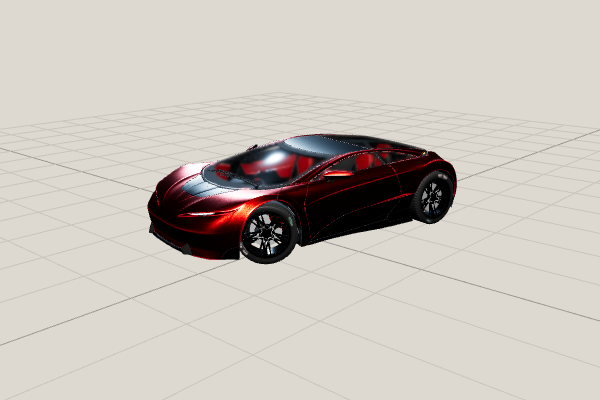
original — Carmine Candy — front-three-quarter 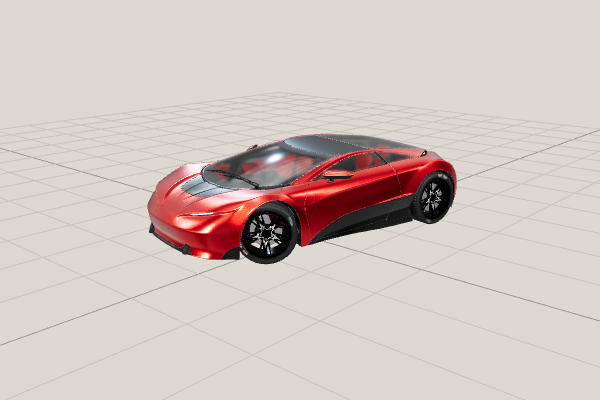
environment-only — Carmine Candy — front-three-quarter grounded-studio — Carmine Candy — front-three-quarter
side
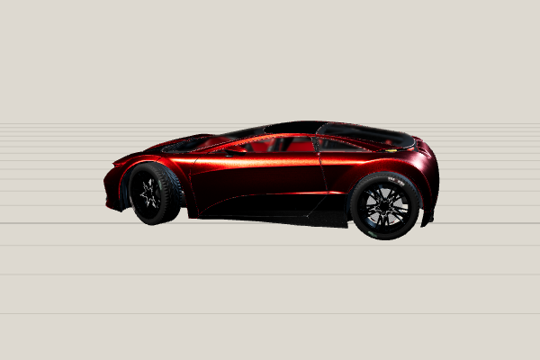
original — Carmine Candy — side 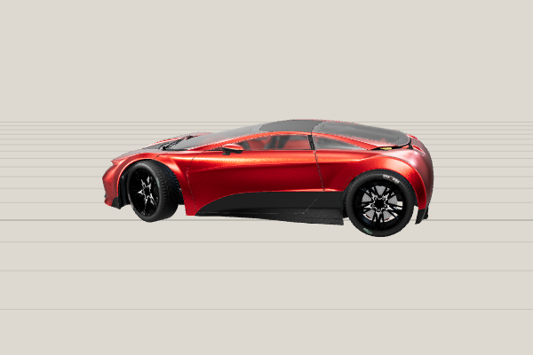
environment-only — Carmine Candy — side grounded-studio — Carmine Candy — side
rear-three-quarter
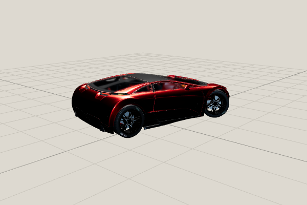
original — Carmine Candy — rear-three-quarter 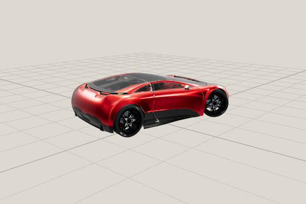
environment-only — Carmine Candy — rear-three-quarter 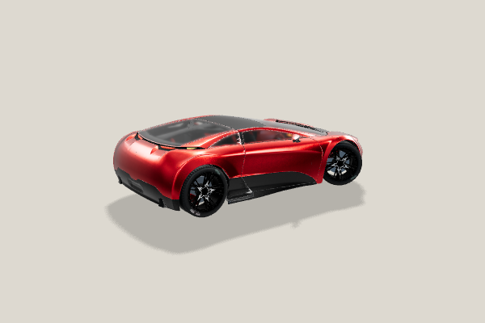
grounded-studio — Carmine Candy — rear-three-quarter
paint
glass
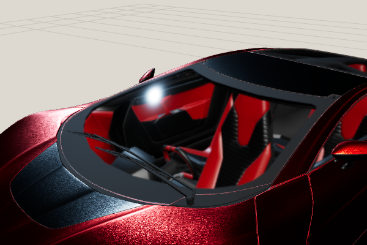
original — Carmine Candy — glass environment-only — Carmine Candy — glass 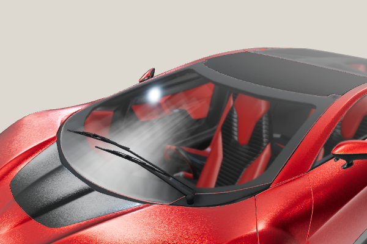
grounded-studio — Carmine Candy — glass
wheel
Pearly Swirly
front-three-quarter
side
rear-three-quarter
paint
glass
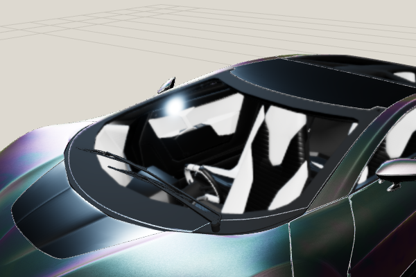
original — Pearly Swirly — glass 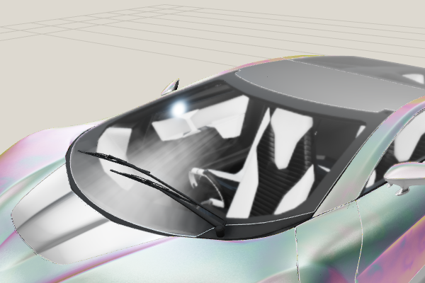
environment-only — Pearly Swirly — glass grounded-studio — Pearly Swirly — glass
wheel
Torched Graphite
front-three-quarter
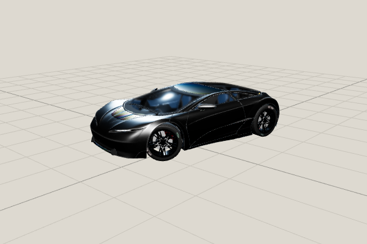
original — Torched Graphite — front-three-quarter 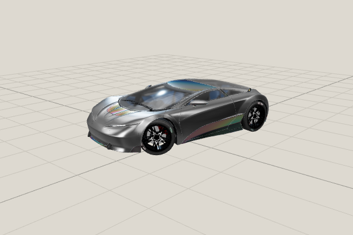
environment-only — Torched Graphite — front-three-quarter 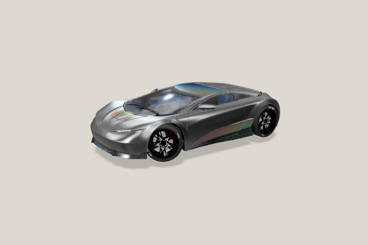
grounded-studio — Torched Graphite — front-three-quarter
side
rear-three-quarter
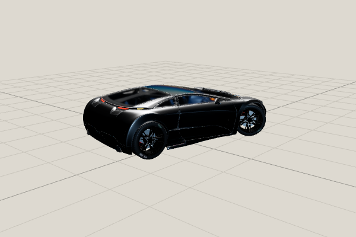
original — Torched Graphite — rear-three-quarter 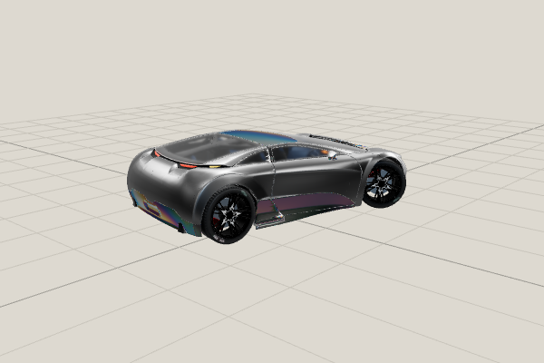
environment-only — Torched Graphite — rear-three-quarter 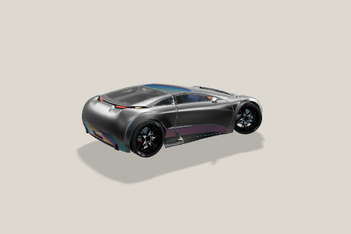
grounded-studio — Torched Graphite — rear-three-quarter
paint
glass
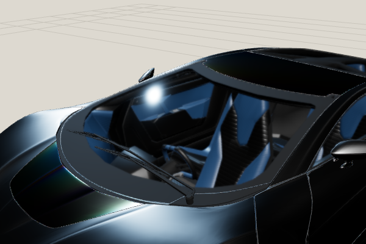
original — Torched Graphite — glass 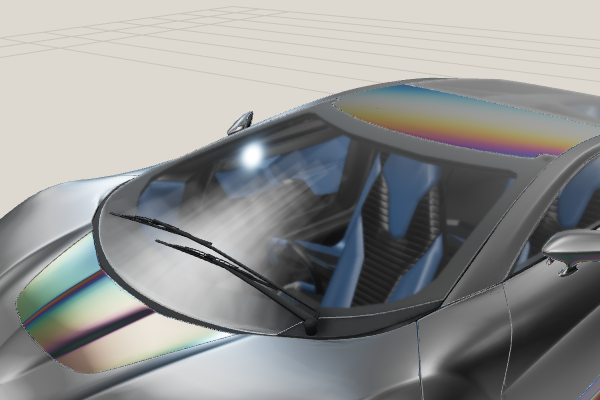
environment-only — Torched Graphite — glass grounded-studio — Torched Graphite — glass
wheel
Estuary Enamel
front-three-quarter
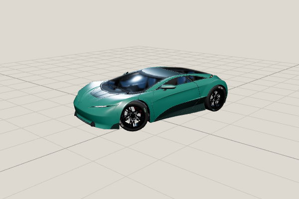
original — Estuary Enamel — front-three-quarter environment-only — Estuary Enamel — front-three-quarter grounded-studio — Estuary Enamel — front-three-quarter
side
original — Estuary Enamel — side environment-only — Estuary Enamel — side grounded-studio — Estuary Enamel — side
rear-three-quarter
original — Estuary Enamel — rear-three-quarter environment-only — Estuary Enamel — rear-three-quarter grounded-studio — Estuary Enamel — rear-three-quarter
paint
original — Estuary Enamel — paint environment-only — Estuary Enamel — paint grounded-studio — Estuary Enamel — paint
glass
original — Estuary Enamel — glass environment-only — Estuary Enamel — glass grounded-studio — Estuary Enamel — glass
wheel
original — Estuary Enamel — wheel environment-only — Estuary Enamel — wheel grounded-studio — Estuary Enamel — wheel